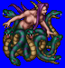
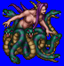
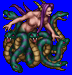
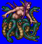

Height: About 160 cm Weight: ???
Habitat: Marsh, river Origin: Greece
Meaning: Child of the dog
Its upper body is that of a beautiful woman, but its lower body is that of a sea monster with many serpentine heads. The myth recounts the story of a demi-god named Glaucus, who fell in love with Scylla, but was unable to win her heart. He approached the goddess Circe, who could use magical incantions to create love potions. Instead of helping Glaucus, she poured a poisonous solution into the water where Scylla lived, turning her into a half-woman, half-serpent monster.